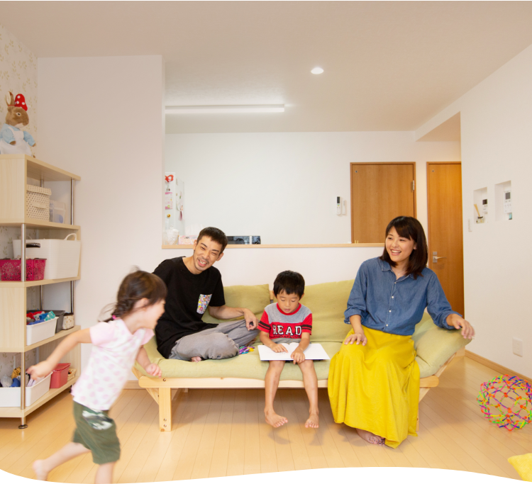
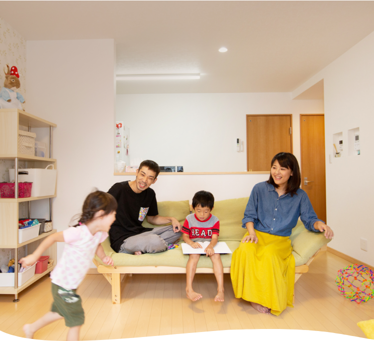

-

家づくりを通して
家族の笑顔と
絆を深める良い品質と安心価格の絆ハウス
-
 

家づくりを通して
家族の笑顔と
絆を深める良い品質と安心価格の絆ハウス
-


家づくりを通して
家族の笑顔と
絆を深める良い品質と安心価格の絆ハウス
良い品質と安心価格の絆ハウス
NEWS
新着情報
'event',
'posts_per_page' => 2,
'post_status' => 'publish',
// 'order' => 'DESC'
);
$wp_eventt = new WP_Query($eventt);
if($wp_eventt->have_posts()) :
while($wp_eventt->have_posts()) :
$wp_eventt->the_post();
$tit_eventt = get_the_title();
$link_eventt = get_the_permalink();
?>
ID, 'eventcat');
foreach($terms as $term) {
$termname = $term->name;
echo '';
}
?>
'blog',
'posts_per_page' => 2,
'post_status' => 'publish',
// 'order' => 'DESC'
);
$wp_st_blogg = new WP_Query($st_blogg);
if($wp_st_blogg->have_posts()) :
while($wp_st_blogg->have_posts()) :
$wp_st_blogg->the_post();
$tit_st_blogg = get_the_title();
$link_st_blogg = get_the_permalink();
?>
ID, 'blogcat');
// foreach($terms as $term) {
// $termname = $term->name;
// echo '';
// }
?>
スタッフブログ
CONCEPT
子供との絆、家族の絆を深める
そのための家だからこそ
安心価格 で 高品質
そして、理想も全て叶えます
たくさんの喜びの声をいただいています！
INTERVIEW
お客様インタビュー
'interview',
'posts_per_page' => 3,
'post_status' => 'publish',
// 'order' => 'DESC'
);
$wp_inter = new WP_Query($inter);
if($wp_inter->have_posts()) :
while($wp_inter->have_posts()) :
$wp_inter->the_post();
$tit_inter = get_the_title();
$link_inter = get_the_permalink();
$time_post = (time() - strtotime(get_the_time('d.m.Y'))) / 86400;
$customer_info = get_field('customer_info');
$main_pic = get_field('main_pic');
?>

こだわりの詰まったお家の事例集
WORKS
事例集
'works',
'posts_per_page' => 4,
'post_status' => 'publish',
// 'order' => 'DESC'
);
$wp_work = new WP_Query($work);
if($wp_work->have_posts()) :
while($wp_work->have_posts()) :
$wp_work->the_post();
$tit_work = get_the_title();
$link_work = get_the_permalink();
$time_post = (time() - strtotime(get_the_time('d.m.Y'))) / 86400;
$customer_info = get_field('customer_info');
$main_pic = get_field('main_pic');
$urlImg = catch_that_image();
if(!$urlImg) $urlImg = APP_ASSETS_IMG."works/no_photo.jpg";
?>
後悔しない家づくりのために
EVENT
& SEMINAR
見学会・セミナー
'event',
'posts_per_page' => 2,
'post_status' => 'publish',
// 'order' => 'DESC'
);
$wp_event = new WP_Query($event);
if($wp_event->have_posts()) :
while($wp_event->have_posts()) :
$wp_event->the_post();
$tit_event = get_the_title();
$link_event = get_the_permalink();
$location = get_field('location');
$time_event = get_field('time_event');
$main_pic = get_field('main_pic');
$urlImg = catch_that_image();
if(!$urlImg) $urlImg = APP_ASSETS_IMG."event/no_photo.jpg";
?>
家づくり情報や絆ハウスの情報が満載
STAFF BLOG
スタッフブログ
'blog',
'posts_per_page' => 2,
'post_status' => 'publish',
// 'order' => 'DESC'
);
$wp_st_blog = new WP_Query($st_blog);
if($wp_st_blog->have_posts()) :
while($wp_st_blog->have_posts()) :
$wp_st_blog->the_post();
$tit_st_blog = get_the_title();
$link_st_blog = get_the_permalink();
$main_pic = get_field('main_pic');
$urlImg = catch_that_image();
if(!$urlImg) $urlImg = APP_ASSETS_IMG.'blog/nophoto_arc.jpg';
?>